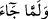
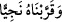

Keşfü’l-esrâr müellifi şöyle demiştir: “Hz. Mûsâ (a.s.) hem sâlik idi hem de câzib
idi. “” âyeti Hz. Mûsâ’nın sülûküne, “” âyeti de onun Cenâb-ı Hak
tarafına cezbolunmasına işârettir. Sâlik sülûkte olduğu sürece tehlikededir. İlâhî
cezbeye ve rabbânî tecellîlere erişince tehlikenin onunla işi olmaz. Yani sülûkte tefrika
vardır. Cezbe ise mahza cem‘iyyettir.
Faydasızdır seyr ü sülûk kendi başına
Hak seni cezbedince vâsıl olursun
Nerede sülûk nerede vâsıl olmak
Bu rabbânî bir sırdır ancak
Molla Câmî der ki:
Sâlikler Dost’un cezbesi olmadan bir yere ulaşamazlar
İsterse bu yolda yıllarca çalışıp çabalasalar
et-Te’vîlâtü’n-Necmiyye’de der ki: “Ona rahmetimizden dolayı kardeşi Hârun’u da
peygamber olarak armağan ettik.” âyeti, peygamberliğin kesbî (insanın emeği ile
kazanılan bir şey) olmadığına, aksine Allâh’ın bir vergisi olduğuna (vehbî) işaret
etmektedir. Allah, dilediğine kendi lütuf ve rahmetinden nübüvvet, dilediğine de risâlet
verir. Bu, kulların kazanma ve çalışmalarından dolayı olan bir şey değildir. Çalışma ve
gayrette başarı elde etmek de yine Hak Teâlâ’nın mevhibelerindendir.
Yine âyette Allâh’a yakın olması (kurbet) ve duasının kabul edilmesi bakımından Hz.
Mûsâ’nın Hak katında çok özel bir yerinin olduğuna işaret vardır. Çünkü onun şefâatiyle
ve duâsıyla kardeşi Hârun’a nübüvvet ve risâlet verilmiştir. Şaşılacak bir şeydir ki
Allah Teâlâ, Mûsâ (a.s.)’ın şefâatiyle kardeşine nübüvvet ve risâlet veriyor, nebîlere ve
rasûllere ise Hz. Muhammed (a.s.)’ı bağışlıyor. Çünkü o, bir hadîsinde şöyle buyurur:
“Bütün insanlar benim şefâatime ihtiyaç duyarlar, hatta İbrahim (a.s.) bile!” [26]
Allâh’ım, bizi O’nun şefâatiyle saâdete erenlerden kıl ve bizi O’nun bayrağı ve
sancağı altında topla!
[24]. Münâvî, VI, 43
[25]. Bk. Irakî, Muğnî, IV, 376.
[26]. Bk. Buhârî, Tevhid, 31